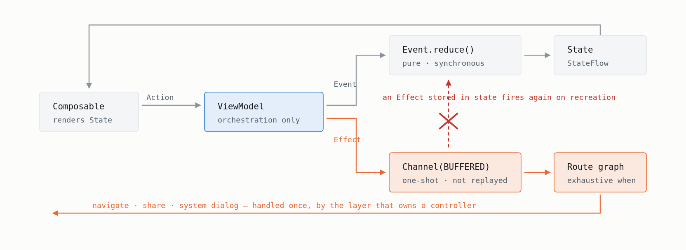
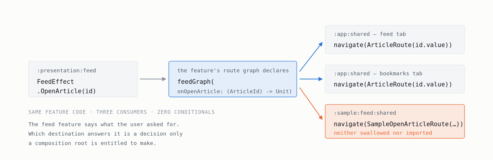

Auditable MVI · Part 3 of 3 · Architecture
Your Navigation Bug Has a Delay Fuse
Separating Action, Event and Effect — and making the separation a build failure instead of a code-review habit.
The MVI layer of the KMP reference application from Part 1 — github.com/kilcimurat/kmp-architect-sample-app, the readable extract of a private 62-module, 11-feature codebase.
Put a navigation command in a state holder and you have written a bug with a delay fuse.
State replays its current value on collection. The user rotates the device, the state re-emits, and the screen navigates again — to a destination they already dismissed.
Every workaround for this is an apology for storing the wrong thing in the wrong place: a nullable field
plus a “consumed” flag, SingleLiveEvent, an id you compare against the last one handled.
Everyone knows this. Almost everyone’s codebase does it anyway, eventually, because the rule lives in a document and the code review in front of you is one diff.
This part is about the rules — and then about what it takes to stop relying on people remembering them.
Three words, not two
Most implementations collapse this into two concepts and spend years working around the collapse:
- Action — what the user did.
ArticleClicked. Not a state change, not a navigation command. - Event — a state transition. Owns a pure
reduce. - Effect — a one-shot request to something outside the screen: navigate, share, open a dialog.
The contract is small:
interface ScreenEvent<S : ScreenState> {
fun reduce(oldState: S): S
}
override fun sendEvent(event: E) {
mutableState.update { current -> event.reduce(current) }
}
That update call is why purity is not a style preference.
MutableStateFlow.update may invoke its lambda more than once under
contention. A reducer that writes to a database, sends an analytics ping or starts a coroutine
does it an unpredictable number of times.
Orchestration stays in the ViewModel, where it can suspend. The completed result becomes an event:
private fun refresh() {
viewModelScope.launch {
sendEvent(FeedEvent.RefreshStarted)
val notice = when (refreshFeed()) {
Refreshed -> null
Offline -> FeedNotice.Offline
is Failed -> FeedNotice.RefreshFailed
}
sendEvent(FeedEvent.RefreshFinished(notice))
}
}
Note what is mapped: a domain result, not an HTTP status. Offline
(expected, cached data still valid) is a different thing from Failed(reason) (worth telling
the user about), and the reason is a domain enum. The transport is dead by the time this runs.
Effects travel on a channel
private val effectChannel = Channel<F>(Channel.BUFFERED)
val effects: Flow<F> = effectChannel.receiveAsFlow()
protected fun sendEffect(effect: F) {
val result = effectChannel.trySend(effect)
check(result.isSuccess) { "Effect transport rejected effect (closed=${result.isClosed}): $effect" }
}
override fun onCleared() {
effectChannel.close()
super.onCleared()
}
Buffered, consumed once. Delivery is in-process and non-durable, and that is the correct trade: persist business state, never navigation commands. A command that survives process death fires into a world that has moved on.
Failing loudly, and earning the right to
trySend failing throws instead of dropping silently. That is aggressive, and only defensible
if a rejection can never happen during ordinary teardown.
The rule that makes it safe is about scope ownership, not coroutines:
- a synchronous effect may come straight from a ViewModel-owned method —
onActioncallingsendEffectneeds no coroutine; - an asynchronous one must come from
viewModelScope, or another scope this ViewModel owns; - an effect must never come from an unowned scope.
Underneath sits a lifecycle detail: ViewModel.clear() cancels viewModelScope
before calling onCleared(), where the channel closes. By the time the
transport is closed, nothing this ViewModel owns can still be running.
That is a dependency on someone else’s ordering, so it is pinned rather than trusted:
@Test
fun viewModelScope_is_cancelled_before_the_effect_transport_closes() {
val viewModel = ProbeViewModel()
ViewModelStore().apply { put("probe", viewModel) }.clear()
assertTrue(viewModel.scopeAlreadyCancelledWhenTransportClosed == true)
}If a future androidx release changes that ordering, this test fails and someone reads the reasoning — instead of users getting a crash on rotation.
Two neighbouring tests are worth copying. One proves consumed effects are not replayed to a second
collector, using a nice trick: closing the transport is what lets toList() terminate at all,
so the fact that it would otherwise suspend forever is the proof that nothing was buffered for
replay. The other proves a full channel and a closed channel fail distinguishably —
“filled up under load” and “you sent after teardown” are different bugs.
The seam
Each feature declares its own effect hierarchy, never merged with another’s. The collector is generic in the effect type on purpose:
@Composable
fun <F : ScreenEffect> HandleEffects(effects: Flow<F>, onEffect: (F) -> Unit) {
val currentOnEffect by rememberUpdatedState(onEffect)
val lifecycle = LocalLifecycleOwner.current.lifecycle
LaunchedEffect(effects, lifecycle) {
lifecycle.repeatOnLifecycle(Lifecycle.State.STARTED) {
effects.collect { effect -> currentOnEffect(effect) }
}
}
}
STARTED, not the life of the composition — because the composition outlives the screen being
visible. Collect for its whole life and a navigation command arrives at a host that has already stopped:
the opening bug of this article, approached from the other side. Pausing is safe here for exactly the
reason the transport is a channel and not a state holder — an effect emitted while stopped waits in the
buffer and is delivered on the next STARTED. Not dropped, and not replayed.
Nothing narrows to ScreenEffect, so no collector needs a cast. The moment a cast
appears at a graph boundary, exhaustiveness is gone and an effect can be added that silently
goes unhandled. With the generic version the when has no else, and adding an
effect breaks compilation everywhere a decision is owed.
fun NavGraphBuilder.feedGraph(onOpenArticle: (ArticleId) -> Unit) { ... }
HandleEffects(viewModel.effects) { effect ->
when (effect) {
is FeedEffect.OpenArticle -> onOpenArticle(effect.id)
}
}
onOpenArticle is the seam that made Part 1’s isolated sample possible.
The feed feature says what the user asked for. It does not know the answer is the article
feature.
That decision belongs to exactly one module:
// app/shared — the only place that knows all three features exist
feedGraph(onOpenArticle = navController::openArticle)
bookmarksGraph(onOpenArticle = navController::openArticle)Both features emit an open-article request; neither depends on the article feature. The isolated sample binds the same parameter to a placeholder screen. Same feature code, three consumers, zero conditionals.
Where DI ownership sits
A presentation module defines exactly one thing: the ViewModel that feature owns. The use cases are deliberately absent — they are constructed by whichever composition root is active, production against the real repository and the sample against a fixture.
If the presentation module defined them, it would carry an opinion about which repository is live, and the isolated sample could not exist without editing it.
The container is runtime (Koin) rather than compile-time codegen, and that is a build-isolation decision before it is a DI preference: an aggregating annotation processor in the feature build path reintroduces exactly the whole-graph compilation the module split removed.
Runtime DI trades compile-time wiring errors for startup errors, so every composition root owes a graph-startup test. That is the bill, and it is paid — each sample has one that resolves its use cases and its initial ViewModel.
FeedPresentationModule.kt · FeedSampleGraphTest.kt
Making it enforceable
Everything above is a convention until something checks it. Part 2 described a gate that reads Kotlin sources; these are the MVI rules it carries.
A reducer must be pure. The check extracts reduce bodies and looks for what makes them impure:
private val reducerForbidden = listOf(
BodyMarker("viewModelScope", "A reducer must not start coroutines."),
BodyMarker("Repository", "A reducer must not call repositories."),
BodyMarker("Clock.", "A reducer must not read the clock; pass time in through the event."),
BodyMarker("sendEffect", "A reducer must not emit effects."),
BodyMarker(".add(", "A reducer must not mutate a collection owned by the previous state."),
)SourceRules.kt — eight more markers there
BodyMarker, not the ImportRule of Part 2 — and the distinction
is the point. A reducer that calls repository.load() imports nothing new, so the import matcher
cannot see it. Substring matching is the weaker of the two tools, so it gets the same courtesy the import
matcher gets: comments are stripped before it runs, because the comment explaining why a reducer must not
call a repository is not itself a reducer calling a repository.
An effect must not live in a state holder:
private val effectInStateHolder = Regex("""MutableStateFlow\s*<[^>]*Effect""")— failing with a message that explains the actual bug rather than citing a rule number.
Three more, each one line of policy:
- A ViewModel must not hold a native controller. A file with
MviViewModel<that importsandroidx.navigation,android.content.Contextorplatform.UIKitfails. Route graphs and native hosts own controllers. - A composable must not resolve a repository from the container. Route composables may resolve ViewModels; repositories stay behind use cases, or the layering is decorative.
- Effects must not originate from
GlobalScope— the one thing that would genuinely make the fail-fast policy unsafe.
These are text-level heuristics and heuristics have false positives. The mitigation is the same as everywhere else here: each rule carries tests including the cases that must not fire. The alternative — “we all agreed reducers should be pure” — has a false-negative rate of 100% eventually.
What this does not give you
- No durability. Effects are one-shot and in-process. Deep links and process-death restoration are navigation-state problems, solved by typed routes and saved state.
- No cross-screen bus. Every effect hierarchy belongs to one screen. Coordination between two is a decision for the module that owns both — the app root, and nowhere else.
- Source-level checking, not semantic. A determined developer defeats any of these with an indirection. The goal is not to make violations impossible; it is to make them deliberate and visible — the same goal as the allowlists in Part 2.
The series, in one paragraph
A feature should build without the application it belongs to (Part 1). That property should be proven by a resolved dependency graph rather than a diagram, on both platforms (Part 2). And the patterns inside the feature should be enforced by the same build that enforces its boundaries (this part).
The layering, the MVI and the typed navigation are not the achievement. They are what a small, verifiable build scope looks like once you decide the build scope is the thing worth protecting.
github.com/kilcimurat/kmp-architect-sample-app — a working Android + iOS Compose Multiplatform app: three features, each with its own runnable sample on both platforms, two verification commands, and a validation report listing the seven failures found while proving it.